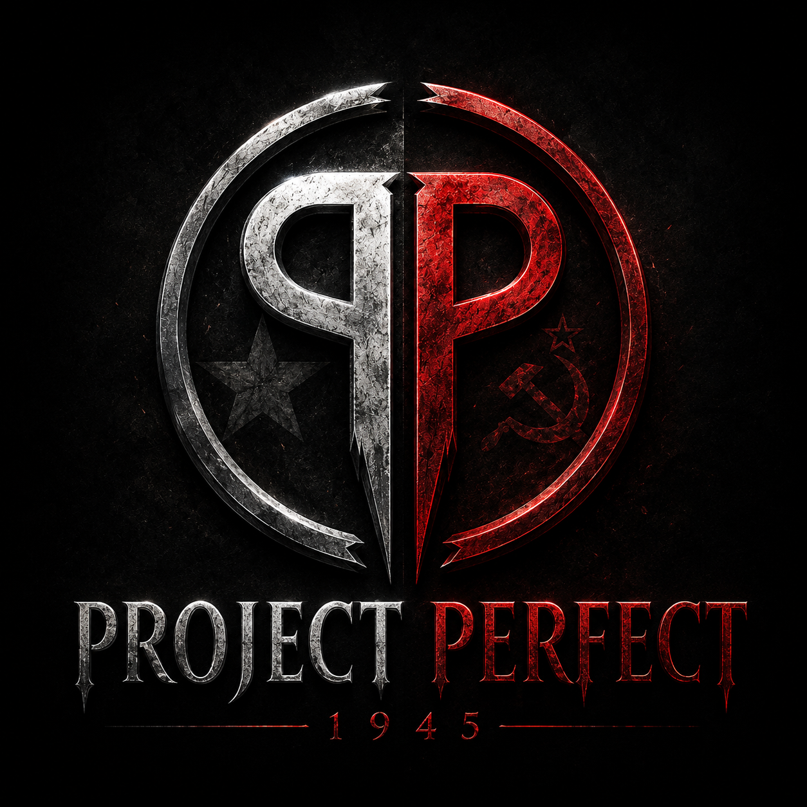

[ ARQUIVO RECUPERADO ]
1945

O resultado final colapsou.
Tudo foi um completo erro.
No auge da segunda guerra mundial, com intuito de acabar com a Alemanha nazista e a URSS, os governantes estadunidenses tiveram a ideia de criar super soldados que seriam: mais fortes, inteligentes, rápidos, resistentes. Resumidamente, a força de exércitos em um homem. Reunindo cientistas especialistas em mutação em um banker subterrâneo, começaram então com os experimentos. A notícia se espalhou por todos continentes, fazendo países tomar medidas protetivas. Entretanto, algo no experimento ocorreu de forma inesperada fazendo com que ao invés de criar seres perfeitos, criassem aberrações.
Você não é um estranho naquele bunker. Décadas após o colapso do Projeto Perfect, um antigo integrante retorna ao local onde tudo começou. As memórias estão fragmentadas, os registros foram apagados e a verdade parece ter sido enterrada junto com o projeto. Mas algumas perguntas continuam sem resposta: Quem realmente causou o acidente? Por que você foi escolhido para retornar? E o que aconteceu com aqueles que permaneceram lá embaixo?
Explore corredores abandonados, laboratórios destruídos e setores isolados pelo tempo. Cada área do bunker guarda documentos esquecidos, experimentos inacabados e pistas sobre os eventos de 1945. Mas nem tudo permaneceu adormecido. À medida que você avança pelas profundezas da instalação, o ambiente se torna mais hostil, revelando que algumas consequências do Projeto Perfect ainda sobrevivem nas sombras.
Agora você conhece apenas fragmentos da verdade. Os registros estão incompletos. As respostas permanecem enterradas nas profundezas do bunker. Você está pronto para retornar?